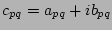
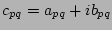

Equivalent real formulations (ERFs) are useful for solving
complex linear systems using real solvers. Using the four
ERFs discussed by Day and Heroux [1], each can be
expressed by multiplying the canonical  form of
the complex matrix by certain diagonal and permutation
matrices on either side. This will allow, for instance, one
ERF to be used as a preconditioner and another ERF to be
used to iteratively solve the linear system by simply
switching back and forth between the forms through scaling
and permuting.
form of
the complex matrix by certain diagonal and permutation
matrices on either side. This will allow, for instance, one
ERF to be used as a preconditioner and another ERF to be
used to iteratively solve the linear system by simply
switching back and forth between the forms through scaling
and permuting.
Many real world problems result in a
complex-valued linear system of the form
, where  is a known
complex matrix, is a known
complex vector, and is an unknown
complex vector. We
can re-write
is a known
complex matrix, is a known
complex vector, and is an unknown
complex vector. We
can re-write  as a real matrix of size
called the canonical
as a real matrix of size
called the canonical  form. If we let matrix
form. If we let matrix  contain the real parts of the complex matrix
contain the real parts of the complex matrix  and let
matrix
and let
matrix  consist of the corresponding imaginary parts, we
can write
.
The canonical
consist of the corresponding imaginary parts, we
can write
.
The canonical  form is created by
forming the matrix
.
form is created by
forming the matrix
.
To preserve the sparsity pattern of  ,
each complex value
 is converted
into a
,
each complex value
 is converted
into a  sub-block with the structure
For instance, if
sub-block with the structure
For instance, if

The four ERFs that we will concern
ourselves with are:
,
,
, and
.
Each of the ERFs can be obtained from the
permuted canonical  form by multiplying by
diagonal and permutation matrices on both sides.
In other words,
,
where , , , and
form by multiplying by
diagonal and permutation matrices on both sides.
In other words,
,
where , , , and  are
certain matrices depending on the size of the complex matrix
and which ERF we desire. Three diagonal matrices and two
permutation matrices (together with their transposes) exist
for the ERFs we are considering.
are
certain matrices depending on the size of the complex matrix
and which ERF we desire. Three diagonal matrices and two
permutation matrices (together with their transposes) exist
for the ERFs we are considering.
The talk will describe the specific diagonal and permutation matrices needed as well as how to transform from one ERF to another.
[1] David Day and Michael A. Heroux, Solving Complex-Valued Linear Systems via Equivalent Real Formulations, SIAM J. Sci. Comput. 23(2) (2001) 480-498.